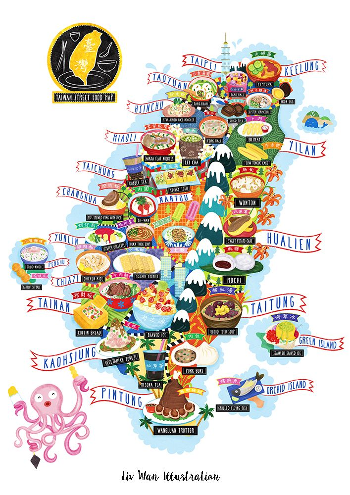

Hometown
Twatutia was also known as Daitoōtei during Japanese occupation. Nowadays it’s a lovely small town filled with hipster vibe cafe and historical buildings. Jiufen is a mountain town in northeastern Taiwan, east of Taipei. It's known for the teahouses, street- food shacks and souvenir shops. The Gold Mine Museum traces the town's history as a mining hub during the Japanese-era gold rush. Tainan, a city on Taiwan’s southwest coast, was the island’s capital from 1683–1887 under the Qing dynasty. Today it’s known for its centuries-old fortresses and temples. One of its most famous sites is Chihkan Tower, an 18th-century Chinese complex with gardens, intricately carved towers and a temple erected on the foundations of Fort Provintia, a Dutch outpost dating to the mid-1600s. Hualien County is a county on the east coast of Taiwan. It is the largest county by area, yet due to its mountainous terrain, has one of the lowest populations in the country.
